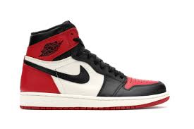

in this website i will update about all the cool things about shoes special entry("airjordan") and also about the ridiculos expensive things in the world.
Air jordans are the shoes which were a result of collab from nike company and micheal jordan a honorable basketball MVP for
four times
the most awesome thing about the air jordans is that their variety of shoes which range from the Air jordans 1 to all the way Air jordans 34.
the reason they became famous are
- they are worn by the goat "micheal jordan"
- they are the best collaboration in the nike
- the ability to customize your wished colorway

here the show has a colorway bred which is short for black and red and these are the orginial colorway AKA OG.
Before knowing more about the shoes we should know about the basics of the shoes
- colorway
- beaters
- retro
- grails
- bred
- deadstock
- unauthorized
the above mentioned are some of the famous vocabulary that one should know about the jordans.
colorway
this something related to the color of the shoes and the pattern and their scheme there are a lot of colorways possible for a shoe and the shoe above mentioned has bred colorway.
beaters
beaters mean that they are preowned shoes that probably have some wear and tare and older models.
retro
retro often sounds as old in this case retro releases or re-release
of an older model with different colorway refers to retro.
deadstock
dead stock often mentioned as DS which is the stock which is preowned and near new condition.
unauthorized
as based on the shoes popularity and their price there are so many replica models are available in the market one should be ware before buying their shoes and should have all the information beforehand.
grails
in the basketball shoe terms these relate to the shoes which are ones loved or most interested.some pay more price than average buyers to get their hands on their grails.
the components of a air jordan
as provided in the above picture the parts os shoe are
- out sole
- mid sole
- tip
- quarter
- foxing
- vamp
- swoosh
- back stab
- eye stay
- tongue